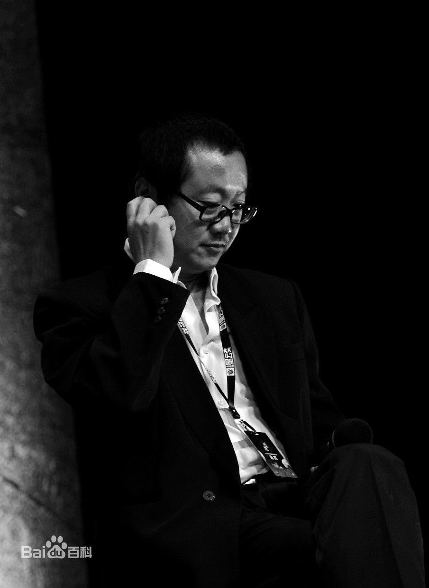

个人简介:（1963年6月23日－），中国当代科幻作家，自上世纪80年代中期开始创作，1999年6月起在《科幻世界》杂志上发表多篇科幻小说和科幻随笔，并出版了多部长篇科幻小说，现为中国科普作家协会会员，山西省作家协会副主席，阳泉市作协副主席。
| 主要作品集 | |||
|---|---|---|---|
| 时间 | 作品 | 类型 | 附注 |
| 1999年 | 带上她的眼睛 | 短篇小说 | 获得1999年中国科幻银河奖一等奖 |
| 2000年 | 流浪地球 | 短篇小说 | 获得2000年度中国科幻银河奖特等奖，收录于《2000年度中国最佳科幻小说集》 |
| 2001年 | 全频带阻塞干扰 | 短篇小说 | 获得2001年度中国科幻银河奖，收录于《2001年度中国最佳科幻小说集》 |
| 2002年 | 梦之海 | 短篇小说 | “大艺术”系列之一 |
| 2003年 | 诗云 | 短篇小说 | 又名《李白》，“大艺术”系列之二 |
| 2004年 | 当恐龙遇上蚂蚁 | 长篇小说 | 又名: 白垩纪往事 |
| 2005年 | 欢乐颂 | 短篇小说 | “大艺术”系列之三 |
| 2006年 | 三体 | 长篇小说，连载 | “地球往事”三部曲之一 |
| 2008年 | 三体II：黑暗森林 | 长篇小说 | “地球往事”三部曲之二 |
| 2008年 | 球状闪电 | 作品集 | 此书为刘慈欣获中国科幻银河奖的中短篇小说集收录《流浪地球》、《乡村教师》、《全频带阻塞干扰》等 |
| 2010年 | 三体III：死神永生 | 长篇小说 | “地球往事”三部曲之二 |
“ 刘慈欣是一个冷漠的宇宙观察者，冷酷的道德评判者，再加上一个冷静的思想者。 ” —— 何夕，科幻作家
“ 刘慈欣用旺盛的精力建成了一个光年尺度上的展览馆，里面藏满了宇宙文明史中科学与技术创造出来的超越常人想象的神迹。 ” —— 姚海军，《科幻世界》副主编
“ 在读过刘慈欣几乎所有作品以后，我毫不怀疑，这个人单枪匹马，把中国科幻文学提升到了世界级的水平。 ” —— 严锋，复旦大学中文系副教授